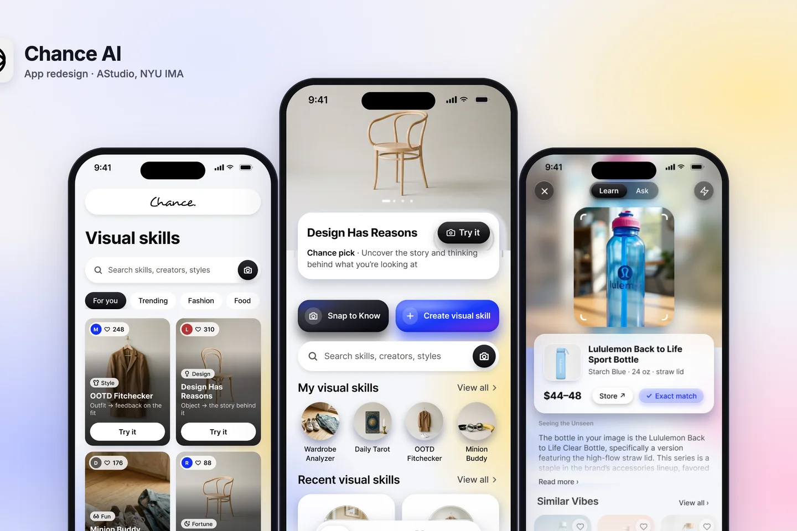
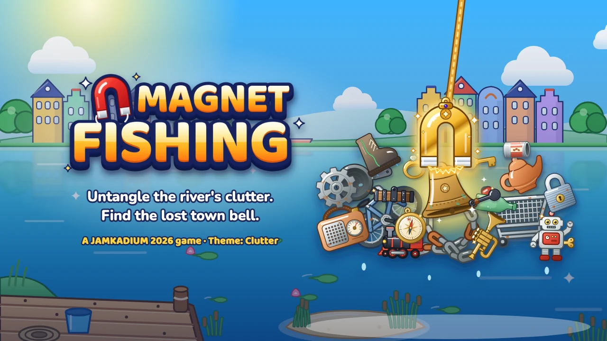
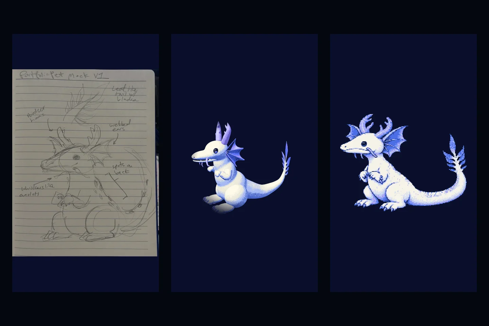

All work
-

Chance AI
A team redesign of a live visual-search app: an audit, Visual skills, and a Home I led that promotes both main actions equally.
Open the file → -
Driftwood
An AI-literacy game. Grow a garden with AI animal helpers and catch the moment their advice goes wrong.
Open the file → -
HabitaBull Lifting
A lifting app for logging workouts and getting back into a routine after a break.
Open the file → -

Magnet Fishing
2nd place at JAMKADIUM 2026: a calm fishing puzzle inspired by Roblox fishing simulators.
Open the file → -
rep.tools
A large e-commerce catalogue IA redesign: navigation, catalogue and product pages for about 6,900 items, with a new brand.
Open the file → -

Portfolio Pet
The dragon who lives in my portfolio: sketched by hand, modelled in Blender, drawn by AI and checked against my model.
Open the file →